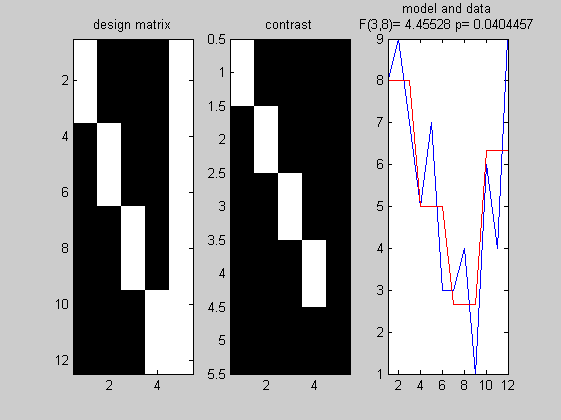
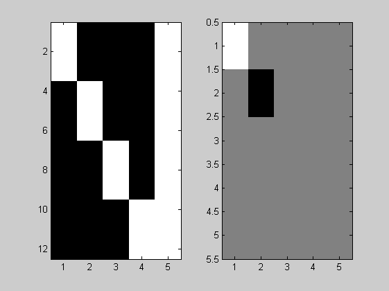

Contents
One-way ANOVA
clear
Y = [8 9 7 5 7 3 3 4 1 6 4 9]';
col1 = [ones(3,1); zeros(9,1)];
col2 = [zeros(3,1); ones(3,1); zeros(6,1)];
col3 = [zeros(6,1); ones(3,1); zeros(3,1)];
col4 = [zeros(9,1); ones(3,1)];
X = [col1 col2 col3 col4 ones(length(Y),1)];
figure;subplot(1,3,1);imagesc(X);
title('design matrix'); colormap('gray')
beta = pinv(X)*Y;
Yhat = X*beta;
e = Y - Yhat;
dfe = length(Y)-rank(X);
var = (e'*e) / dfe;
P = X*pinv(X'*X)*X';
R = eye(length(Y)) - P ;
C = [1 0 0 0 0; 0 1 0 0 0; 0 0 1 0 0; 0 0 0 1 0; 0 0 0 0 0];
subplot(1,3,2);imagesc(C); title('contrast')
Xc = X*C;
C0 = eye(rank(X)+1) - C*pinv(C);
X0 = X*C0;
R0 = eye(length(Y)) - (X0*pinv(X0));
R = eye(length(Y)) - (X*pinv(X));
M = R0 - R;
F = ((beta'*X'*M*X*beta)/(Y'*R*Y))*(dfe/(rank(X)-1))
F = ((beta'*X'*M*X*beta)/(rank(C)-1))/((Y'*R*Y)/dfe)
pval = 1 - fcdf(F, rank(X)-1, dfe)
subplot(1,3,3);
plot(Y); hold on; plot(Yhat,'r'); axis tight
mytitle = sprintf('F(%g,%g)= %g p= %g', rank(C)-1, dfe, F, pval);
title({'model and data';[mytitle]})
C = [1 0 0 0 0; 0 -1 0 0 0; 0 0 0 0 0; 0 0 0 0 0; 0 0 0 0 0];
figure;
subplot(1,2,1);imagesc(X); colormap('gray')
subplot(1,2,2);imagesc(C);
Xc = X*C;
C0 = eye(rank(X)+1) - C*pinv(C);
X0 = X*C0;
R0 = eye(length(Y)) - (X0*pinv(X0));
M = R0 - R;
F = ((beta'*X'*M*X*beta)/(rank(C)-1))/((Y'*R*Y)/dfe)
pval = 1 - fcdf(F, rank(C)-1, dfe)
F =
4.4553
F =
4.4553
pval =
0.0404
F =
3.9512
pval =
0.0821
 